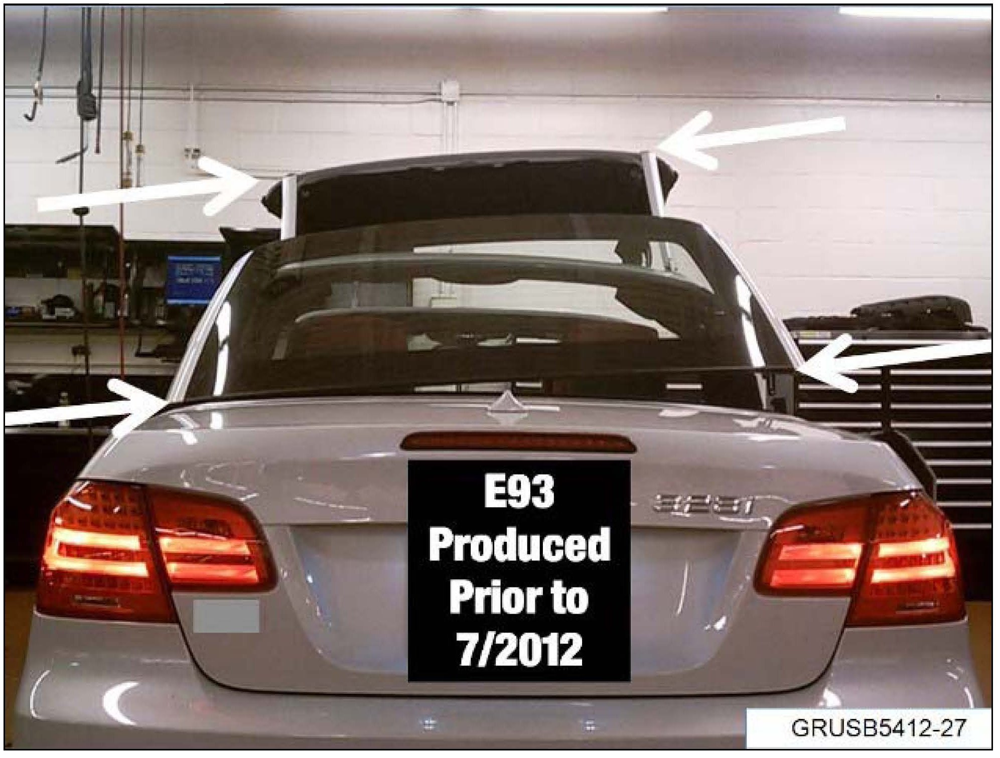
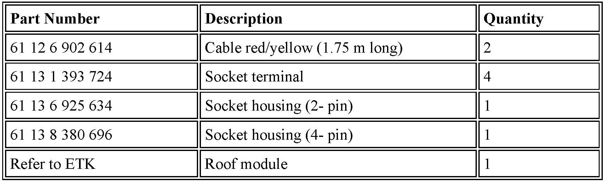
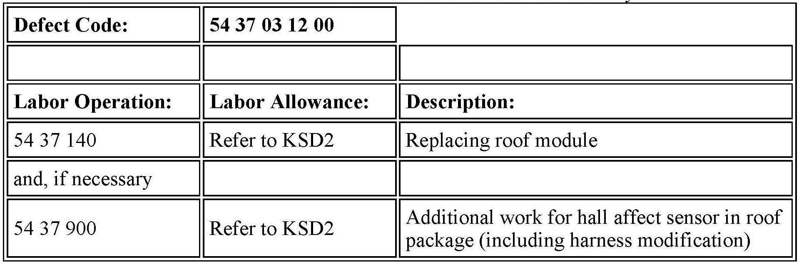

Body - Retractable Hard Top Not Stacking Properly
SI B54 04 12Special Roofs
March 2013
Technical Service
SUBJECT
Retractable Hard Top (RHT) Is Not Stacking Properly - Frame Bent
MODEL
E93
Produced to July 2012
SITUATION

The RHT frame is bent or twisted and cannot be operated in either direction, or the roof shells are not stacking properly.
CAUSE
The hydraulic roof cylinders operate out of sequence causing the frame to twist.
PROCEDURE
1. Replace the complete roof module assembly.
Note:
The new replacement roof module will have a new hall sensor installed to the top frame. This hall sensor will require a wiring harness modification to the body side harness in order for the hall sensor to function properly.
2. Refer to ISTA Repair Instruction 54 37 900 "Additional work for hall effect sensor in roof package" and modify the wiring harness accordingly.
3. Use ISTA/P to code the vehicle with "Conversion CTM - new sensor roof package stowed, left"
Note that ISTA/P will automatically reprogram and code all programmable control modules that do not have the latest software.
For information on programming and coding with ISTA/P, refer to CenterNet / Aftersales Portal / Service / Workshop Technology / Vehicle Programming

PARTS INFORMATION
Roof modules are coded painted parts and only shipped sea freight from Germany. Coded roof modules may take up to twelve weeks to arrive depending on availability and Center location. The US parts availability inquiry may show available stock in the Nazareth Regional Distribution Center (RDC), however only select fast moving colors are stocked in the US. If the color is not available in the US, an order will be placed by the RDC with Germany. You will receive a phone call from the Nazareth RDC confirming your order will be shipping from Germany.

WARRANTY INFORMATION
Covered under the terms of the BMW New Vehicle/SAV Limited Warranty.
Labor operation code 54 37 140 is a Main labor operation. If you are using a Main labor code for another repair, use the Plus code labor operation 54 37 640 instead.
Refer to KSD2 for the corresponding flat rate unit (FRU) allowance. Enter the Chassis Number, which consists of the last 7 digits of the Vehicle Identification Number (VIN). Click on the "Search" button, and then enter the applicable flat rate labor operation in the FR code field.